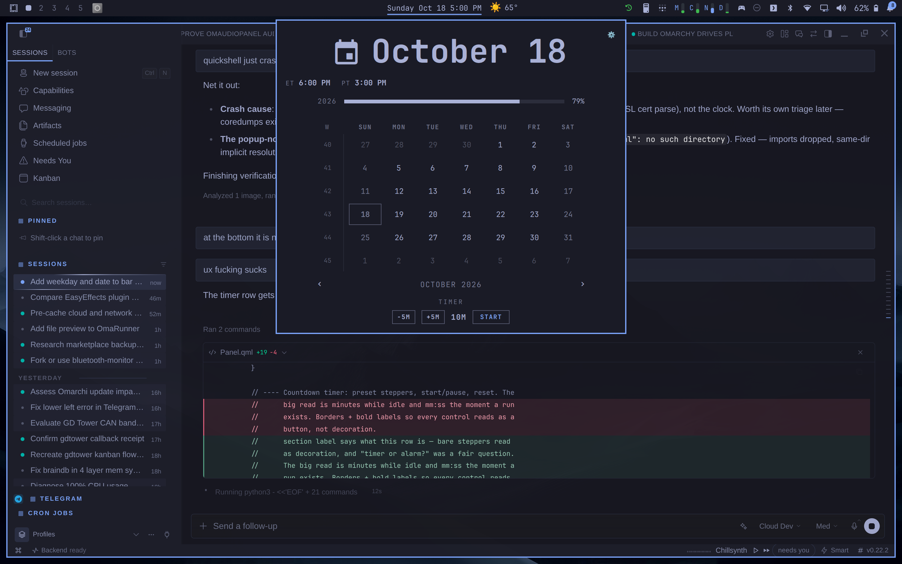

A fork of the stock Omarchy clock. Day name, short date and time in the bar label by default — and a bordered toggle in the calendar popup for the days you'd rather just see the time.
◆Date in the bar label by default
◆Sunday Oct 18 4:20 PM, at a glance
◆Date on/off — a toggle, not a format string
◆Masks any format on the ring
◆World clocks — search any city, live times
◆Countdown timer · gear settings view
◆Zero network — one read-only date call
◆MIT — rebases onto stock clock
THE CALENDAR — DATE TOGGLE

THE CLI — REAL OUTPUT
$ omarchy bar set gdeyoung.timepiece showDate false
Set showDate on gdeyoung.timepiece → Sunday 4:09 PM $ node --test test/
ℹ tests 28 ℹ pass 28 ℹ fail 0